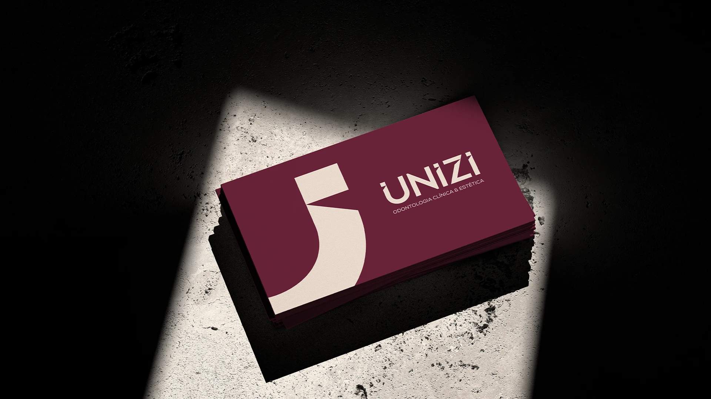
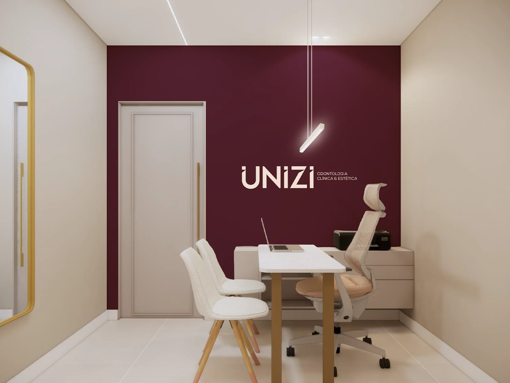
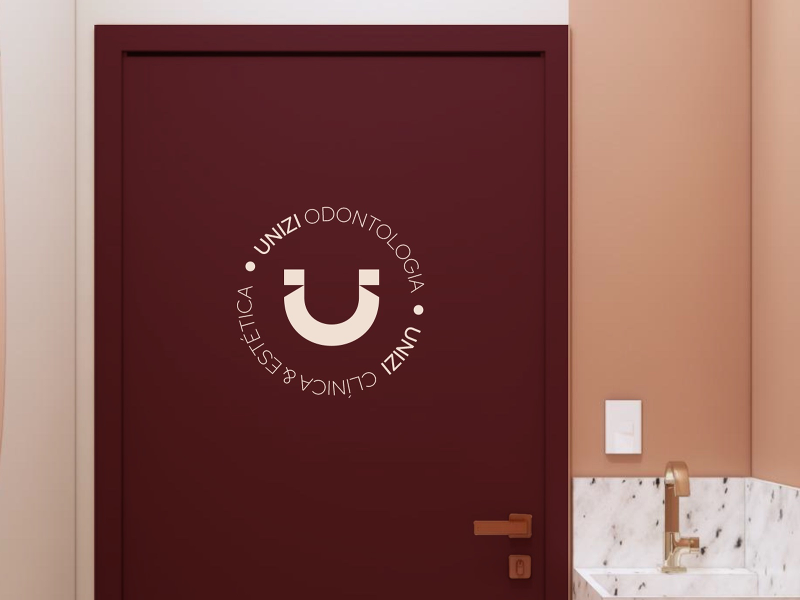
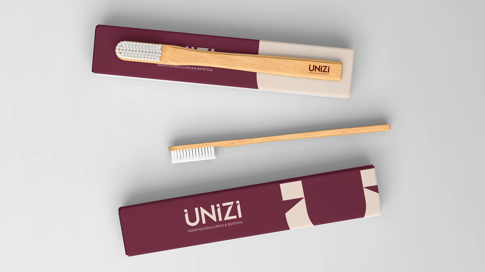

Contexto
Sobre a marca
A Unizi é uma clínica de odontologia clínica e estética, localizada em João Pessoa, que acredita que cada sorriso carrega uma história e necessidades únicas. Com uma proposta que une saúde, estética e qualidade de vida, a marca valoriza o atendimento individualizado, a escuta e a busca por soluções adequadas à realidade de cada paciente.
O desafio
O que a marca precisava comunicar
O desafio era construir uma identidade que transmitisse autoridade profissional sem abrir mão da proximidade e do acolhimento. Para isso, o projeto partiu do conceito de singularidade, traduzindo visualmente a ideia de que cada sorriso é único. O resultado é uma identidade contemporânea, com formas geométricas e detalhes personalizados, que equilibra precisão e sensibilidade.
O símbolo inspirado em um sorriso e suas covinhas reforça o lado humano da marca, enquanto a tipografia e a paleta de cores consolidam uma percepção de confiança, sofisticação e profissionalismo.
Mockups e aplicações




Próximo projeto
Capiba Pilates
Estúdio de Pilates · Estratégia de Marca

O próximo capítulo começa aqui